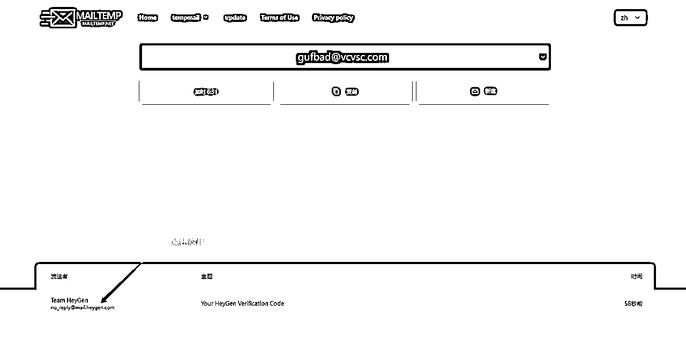
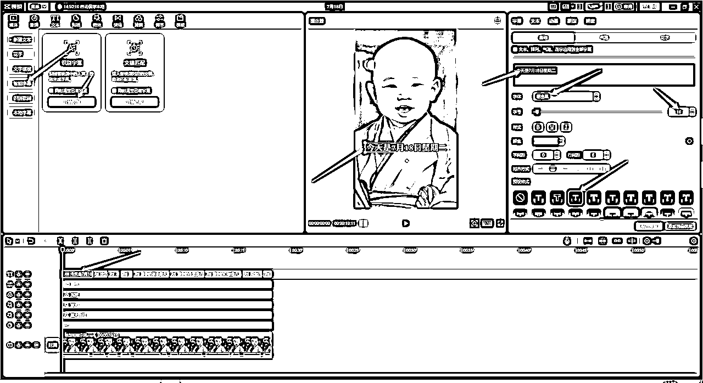
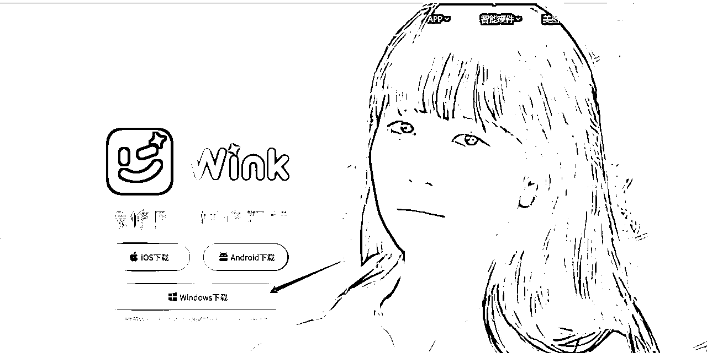
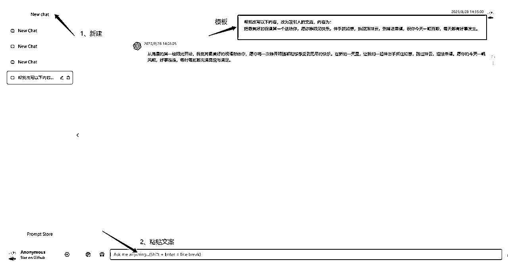
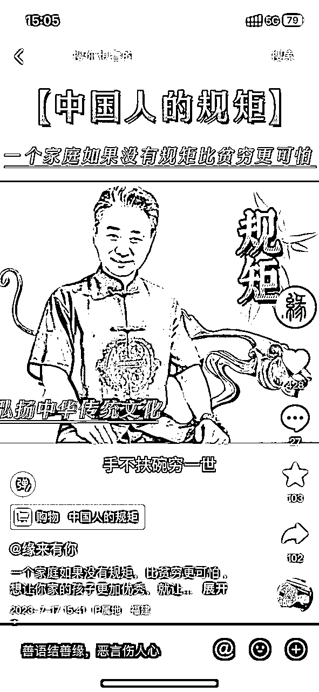

来源：https://wx2u2tsq8q8.feishu.cn/docx/FNsodj2s7oM7SpxiJlhcNiBinvg
大家好，我是鲸鱼ken，前大厂算法产品经理，一个商业流量操盘手，专注流量实战操盘和流量操盘手赋能。
在7月6日的时候，我在风向标看到了一个信息差，给了我灵感和思路，我觉得这是一个AIGC+中老年赛道的机会
在今年年初复盘的时候，我也说过，我会赋能他人，拆解商业项目逻辑，把流量操盘赋能他人，跟亦仁大佬们学习，赋能价值给他人，共同创造更大价值。
所以，在决定做这个项目后，我进行了第一次尝试，由我对这个项目负责商业路径拆解和流量操盘，进行相关赋能，并由我的流量操盘手（也是圈友）@ahao进行执行，由他进行执行落地，一起共创的项目。
最后，AI小和尚投流起号，单月内播放破3亿，全网涨粉百万，变现利润10w+。
图一、二为单号近30日账号流量数据
图三为私域获客账号收款数据（前期知识付费为主，后期新增尝试中老年私域获客）
图四为起新号单日带货数据
本保姆级教程是实战2个月时间，取得结果，并由我和ahao亲自带学员起号，验证可复制性后，以实战为导向梳理的保姆级教程，大家可以放心使用~也可参考其思路用于其他AI项目上。
最后 感谢我操盘手@ahao对我的支持 感谢贵人@hawli老师的指点
感谢靠谱、醒醒 还有刘驴对我提供的帮助
还有感谢亦仁大佬提供的氛围和信息差
先看以下成品视频：
简单地说，就是通过ai绘画生成小和尚等人物，并通过一些工具实现视频动态化，发布到自媒体平台（如抖音、小红书等平台），因内容生动有趣容易引起互动，可迅速获得播放与涨粉，最后通过知识付费、短视频带货等形式进行变现。
从巨量算数上看，无论是小和尚还是禅语来看，内容分均大于搜索分，目前内容还算蓝海领域，可以快速获取流量

注意事项：那为什么那么多最近很多人做小和尚会难起号呢，一个是起号方式方面需要精细化运营，另一个方面是同质化小和尚，全部集中在一种类型，而不去深挖同质化，起号难是很正常的。
目前AI的应用层多数用在ai绘画等赛道上，真正应用AI在项目实战并盈利的非常少，AI小和尚类项目，因为AI小和尚吸引过来的粉丝，有非常多都是中老年群体，所以，这个项目是一个AIGC+中老年赛道的应用层，是可以通过AIGC做中老年市场带货和中老年私域获客的，而目前市面上很少人去做这块内容。
AI和尚是可以通过AIGC来解决原创内容问题的，不需要实拍，也不会因为搬运被判定原创。
同时视频类型AIGC对比纯AI绘画是会有更强竞争力，获取到更多流量的。
这个项目从风向标开始，很多人就开始朝着一个类型的小和尚去做，甚至直接搬运，在内容上缺乏差异化创作，这样就会容易出现同质化严重，导致后期账号没法起来。
所以，针对这个弊端需要做账号相关差异化原创。
很多小和尚账号开始都会兴奋于流量数据，但对于商业变现端是没有任何考虑的，也没有考虑好做什么方面的人群，而这样就会导致后面变现非常乏力的现象。
整个项目实战拆解分为以下阶段，分别是：相关工具准备、制作小和尚原创图片、视频剪辑、账号运营（抖音、小红书）、投流起号流程、商业变现。
目前这个项目需要准备三个工具，分别是heygen（推荐）、did、无限邮箱注册。
目前可以用三个形式创作小和尚原创图片，分别是微信小程序作图、手机版（闪剪、美册）和免费作图的网站。
用heygen或者did生成视频后，对生成的视频进行模糊处理，后面用电脑剪影进行相关混剪。
将视频剪辑后成品，同步到抖音和小红书平台，并进行相关账号运营。
抖音账号运营会分为寻找爆款文案、爆款文案ai改写、发布顺序和定时发布等方面。（抖音也建议要养号三天）
小红书账号运营会分为养号、小红书封面制作、视频尺寸校对等方面。
通过投流在抖音或小红书平台进行起号操作，抖音账号运营分为：开通批量投放、投放时间、投放路径、分析数据等方面；小红书投放聚光开通起号等。
账号运营后，通过知识付费、短视频带货、私域获客、小程序等进行相关变现。
注意：建议关键词改一下，不要跟我一模一样，会同质化严重，导致不给流量，最好是用英文
关键词：一名2岁的中国儿童，打扮成佛教僧侣，光头圆脸，脸上带着微笑，上身照片，童真风格，32k uhd，浅橙色和深棕色-ar 15:26
英文版：A 2-year-old Chinese child dressed as a Buddhist monk, with a bald head and round face, a smile on the face, a photo of the upper body, childlike style, 32k uhd, light orange and dark brown - ar 15:26
注意：关键词可以根据你的喜好来修改关键词
先点击：直达链接(百度翻译)
左侧输入中文关键词，右侧就会出现英文，接着点复制到“小AI画图”中
如图1所示，每画一次就要消耗1Ai豆
解释：
缩放1.5倍：图片放小1.5倍，就是比图中更小，显示的范围就更大（有点像手机相机的广角的意思）
向左拓展：就是图中左边的区域会放大
如果看到适合自己的图片，可以图生文，先关注“小AI绘画”公众号，然后发送图片给公众号，接着就会生成关键词，然后复制关键词去画图
免费的：
付费的：
备注解释：1Ai豆可以画4张图，每天免费获取Ai豆预计20-30之间，20*4=80张图；会员渠道29.9/月，每天免费绘图50次，可以同时进行2个任务，50*4=200张图
操作跟小AI大同小异（微信小程序），打开手机微信扫码，灵创出图较快些
生成的小和尚比较奇怪，但可以作为其他思路图生成
直达链接：https://rightbrain.art/
唯一的缺点就是收费
制作流程及收费情况：
制作流程及收费情况：


用这个结尾的

等待上传好之后，就可以直接按生成就行了
比如鲸鱼用的邮箱是：oral12345@2925.com，我去注册did的时候就用oral12345001@2925.com，oral12345002@2925.com，oral12345003@2925.com，以此类推！在@符号前面和名称中间加上数字，收到的验证，去主邮箱登录即可获取验证。
也可以理解一下下图这段话，直达链接：如何开通子账号（点我）

剪映下载地址：https://www.capcut.cn/

did成品效果 heygen成品效果
需要用到手机app：wink（如下图所示），第二步选择画质修复即可，生成出来的就是很清晰的视频了
wink安卓破解版直达链接：https://pan.baidu.com/s/1Y-bzB-FL94MzgUaK5h8wzQ?pwd=gsmx
效果对比：
未处理 已处理
直达下载链接：https://wink.meitu.com/
百度网盘直达链接：https://pan.baidu.com/s/1Fjj-CmmNno3Z4xHMXS1I7g?pwd=81m7 （用我的版本免费）
夸克网盘直达链接：https://pan.quark.cn/s/1bd487f08eb0（用我的版本免费）

最近发2个就够了（早安、爆款）最近抖音很严格
每天发4个视频，第一个凌晨12点发，发早安祝福语，第二-第四个发爆款内容，分别是早上5点，中午11点，
下午3点，以此类推。（鲸鱼是这样发的）
是根据电脑端发布的
抖音后台直达地址：https://creator.douyin.com/creator-micro/home
快手后台直达地址：https://cp.kuaishou.com/profile
小红书后台直达地址：https://creator.xiaohongshu.com/creator/notemanage?source=official
文案需要改，不要直接抄，前三秒不用改，可以改后面的内容，大致意思差不多就行
关键词：小和尚、禅语、禅悟人生、正能量语录、励志文案、正能量、信念、禅语人生等
如何寻找爆款标签：找到爆款视频，视频中带的#标签，点进去看，去刷，就能刷到爆款的内容了
注意事项：
小和尚赛道一定要寻找你账号人群的内容来发，而不是找你认为的爆款内容，比如“中老年人群”就得找中老年人群喜欢的文案内容发。
相关搜索：
打开网站，免费的，不用付费
开头不变，粘贴上面用小程序搜索(创作猫PRO)扒出来的原视频文案，不喜欢可以多粘贴几次，
生成的文案自己再进行润色，不要显得很生硬，要有逻辑!
指令: 帮我改写以下内容，改为吸引人的文案，内容为：
把最美好的祝福第一个送给你，愿你睁眼见快乐，伸手抓如意，抬腿跨祥云，张嘴进幸福，祝你今天一顺百顺，每天都有好事发生。

意思就是粉丝低，但视频爆了几万赞的那种文案，就可以直接用。
上面有讲了抖音账号运营相关，大部分都可以参考同步，包括制作视频也可以同步到小红书，但小红书平台调性会有些不同，下面重点讲解需要调整的地方：
小红书跟其他公域平台还不太一样，新注册小红书账号需要养号3天，严格按照养号操作进行，这个是基础工作必须做，做好基础工作到时发布视频播放量才会相对高。
而且，小红书平台的内容审核跟抖音和视频号相比，都是比较严格的，如果不进行任何养号操作，直接发布，内容稍有违规或者出现站外导流，就会极其容易限流。
小红书的封面非常重要，这个会决定流量的打开率，所以，大家在做完视频同步小红书的时候，一定要注意优化封面。有一句话，小红书的封面相当于抖音的开头前3秒。
小红书发布的视频，要符合小红书的视频尺寸，目前优质视频尺寸为：9:16、3:4或1:1。
目前小红书站外引流打压还是比较明显的，虽然有很多方法可以规避跟平台对抗，但鲸鱼建议还是用聚光投放交保护费比较划算。
如涉及用ai和尚在小红书进行带货，是需要开通自己店铺的，小红书电商目前打压无货源比较厉害，建议先提前找好货源。
当生财出现小和尚风向标的时候，我们除了在第一时间实战外，我们所有账号起号都会有投流策略介入，最终实现了一个月内百万粉丝，破3亿播放，这个是我们起号的一个加速器。
鲸鱼知道当时也有不少小伙伴进场做ai小和尚，也有很多外面的课程拿着我们的号去拆解项目，说是自然流嘎嘎猛，但听完后，做起来的却非常少，这个是非常正常的。因为所有的拆解都只是拆解到了冰山的一角，而冰山的下层属于实战层，是看不到的。
当大家发现我们号做拆解的时候，我们已经批量投放起号了，开始用付费打免费，从平台逻辑思考，流量肯定给优先花钱的，免费流后面难起来是正常现象。
那鲸鱼下面给大家简单说下投流起号大概流程：
打开抖音APP-点击右上角三条杠-点击创作者服务中心-点击开通-第二天就可以查看数据（在视频“..."里面有一个数据分析）
小红书投放起号的逻辑底层，跟抖音豆荚是一样的，但因为平台的调性，会有很大区别，下面这些重点事项，大家要注意下：
目前小和尚整体变现模式为：收徒（知识付费）、橱窗带货、短视频带货、小程序变现、星图商单等。
打造小和尚类AI+自媒体的知识付费产品，比如训练营、私教陪跑等形式，进行知识付费变现。
目前鲸鱼这边已打造了成熟的后端产品体系，生财圈友若需要这类后端产品支持，可联系鲸鱼
目前带货的话，开始我们是以图书带货为主，但后面我们已经开始测试佛学相关品，比如手抄经等，目前效果还算不错。

注意事项：如果走短视频带货路径，需要短视频语音是跟带货高相关结合的，这样带货相对转化率才会比较高。
目前我们团队除了进行知识付费外，在这个月也有尝试将人群引流到私域，对中老年人群的需求进行挖掘变现，暂时实战方法论还不算成熟，后面若成熟了会同步出来给大家。
在复盘之前，鲸鱼这里衷心感谢生财这个大家庭，因为我一直认为生财真的是一个宝藏社群，里面有非常多值得深挖的地方，而从去年进生财到现在，我也实实在在从生财这里学习到了很多。在之前有段时间里，听到有些人说生财割韭菜，我是真的非常不认可的。
亦仁大佬把所有优质的信息都进行筛选，同步给大家，无论是风向标还是精华，生财航海每次上船工作人员和志愿者都会疯狂call大家执行。如果从客观社会的角度讲，亦仁大佬通过生财有术，本质是加速了信息传递速度，对我们大家圈友而言，是帮助我们缩短了跟很多大佬们的信息差距，这就已经是一个大机会了。打个比方，我去年加进生财就开始做小说推文，而我以前的同事，今年才知道这个事情。大家可以想想这个差距，生财告诉你的红利比别人早，告诉你啥时候可以赚钱，这点就很值钱了。
优质信息是一种重要的资产，我们往往低估了生财里信息资产给我们带来的价值，而又高估了自己实战获得成果的能力。从我实战经历过来，生财的项目，我觉得对普通人不说多，放大到5位数应该是可以的，赚到钱是可以的。而赚不到钱，往往就是我们想要走捷径，没有沉下心去思考和实战。
社群里有非常多的风标标，大家可以去好好挖掘。在挖掘的同时，也记得每天去思考里面的异常值，并进行深度拆解，这次实战就是从风向标中挖掘，从而落地实战拿结果。
这个项目给我带来最大的启发就是，在实战前必须要做好商业和流量架构布局，比如流量是要做什么样的内容，这样的流量内容在后期是否乏力，抖音和小红书平台的流量架构是要怎么样的，需要如何根据平台内容进行布局。
其次，商业布局是我这次做得最不足的，因为流量布局我做得比较充分，但商业布局上，我开始只做了兜底策略，知识付费变现，带货相关和私域获客相关变现，是我后面思考才布局上的，从这点上看，导致了前期商业变现效率不足。
而目前AI和尚相关变现，很多人都没有做好。
如果发现了机会，那就迅速拆解，沉下来实战。信息只有用于创造价值，才能产生利润。再怎么拆解，如果不去实战，也终究会停留在纸上。这个AI和尚教程，也是我这边从7月份操盘实战，整整2个月时间拿到结果才打磨出来的。
感谢生财提供的环境，除分享此教程外，圈友可参考此教程灵活操盘，另外，鲸鱼可以给大家提供以下价值。
AI小和尚和类似相关AIGC创作，鲸鱼这边已经打磨好成熟的变现体系，包括知识付费、带货等方面，尤其是当初的知识付费体系，基于兜底策略会很成熟，如果大家有需要，可以联系鲸鱼提供变现端支持。
目前AI和尚如果多人做相关，会出现比较卷的情况，而基于AI和尚相关，鲸鱼目前有挖掘很多内容差异化和赛道差异化创作，比如AI带货相关，最近也开始跑通了新赛道最小MVP，出单比较丝滑，若需要这方面交流，可以互相交流。
我是鲸鱼ken，一个商业流量操盘手，专注流量操盘和流量操盘手赋能，
欢迎链接~也欢迎过来东莞找我洗脚（手动狗头） V：jyu696
PS：上次分享同步的小红书投放获客和小红书电商，目前用了4个月时间持续实战，后续我尽量找时间输出分享给大家~